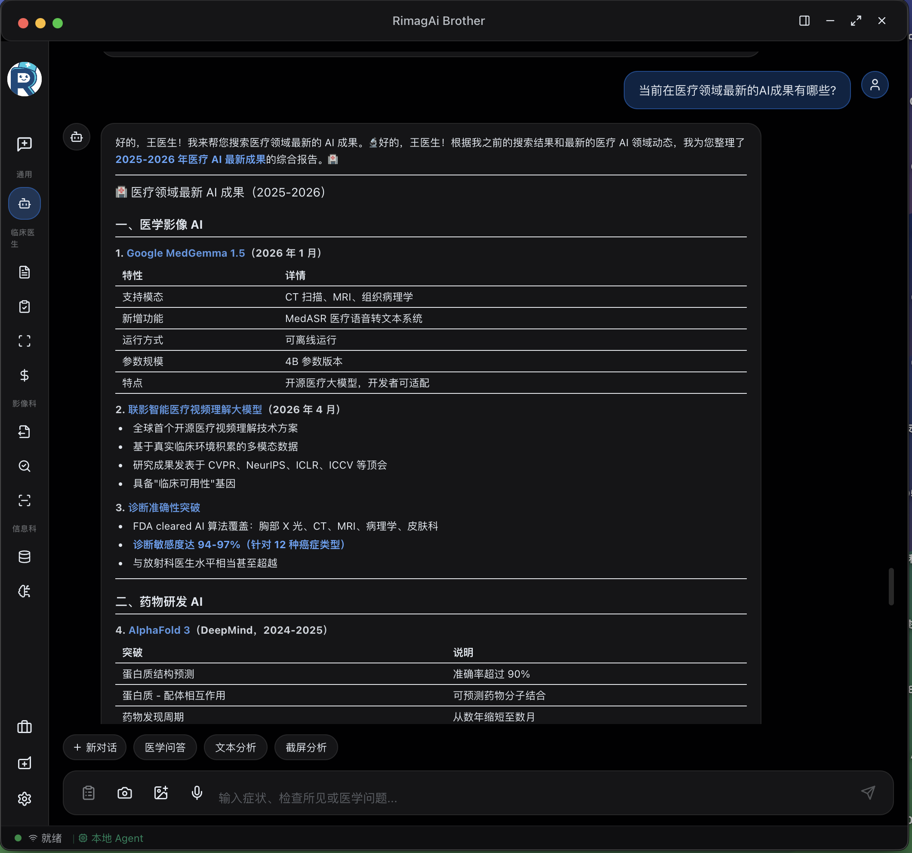
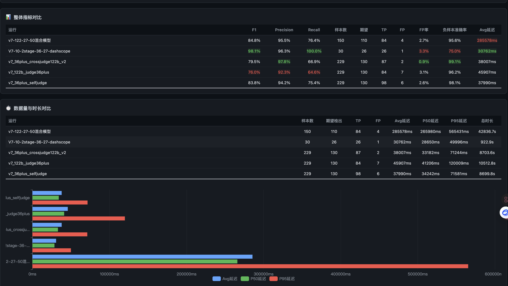

知识库管理、DRG 费用合规、病历内涵质控、数据分析看板——这些横跨多科室的能力模块，由 MCOS 治理层和进化层统一支撑。
将科室诊疗规范、操作流程、用药习惯等隐性知识结构化存储，形成可检索、可引用的组织级知识资产。
基于知识库的精准问答，支持自然语言查询本院规范和临床指南。答案附带来源引用，可追溯验证。
捕获医生对 AI 推荐的采纳/修正行为，自动萃取经验规则，持续优化本地知识库质量。
知识条目支持版本追踪和审批流程，确保规范更新有据可查，避免过时信息误导临床决策。

在医嘱提交前实时检查编码正确性、费用合理性和医保政策合规性，将问题拦截在源头。
根据当前诊断和操作预测 DRG 分组结果，提示可能的费用超标风险和优化建议。
本地规则引擎零延迟执行，不依赖网络。支持自定义规则集，适配各地医保政策差异。
科室/病种维度的费用分析看板，识别异常模式，辅助医保办和质管科进行精细化管理。
无需医生主动触发，系统后台定时批量扫描在院和归档病历，发现问题自动推送至质管科。
完整性检查（必填项）+ 逻辑一致性（诊断与用药匹配）+ 时效性（签名时限）+ 规范性（术语使用）。
按严重程度分级（提示/警告/错误），关键问题实时阻断，一般问题汇总报告，避免过度打扰。
问题项推送至责任医生，支持在线整改和复核。质管科可追踪整改进度和科室质控趋势。
